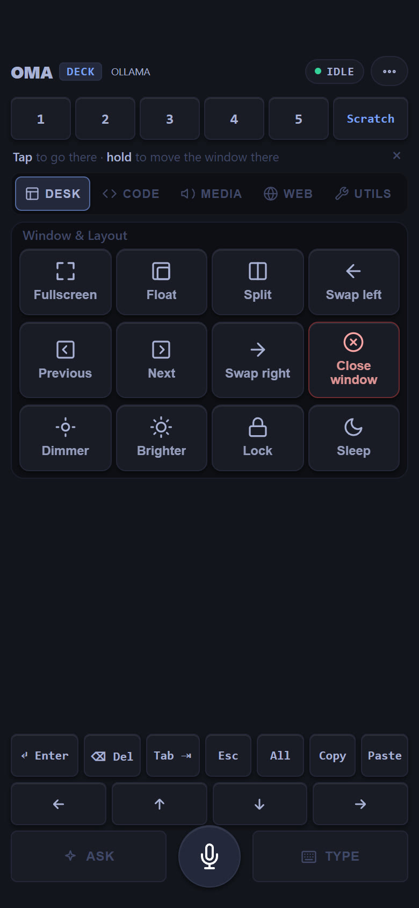

VoiceMichold
Say what you want
- Hold the mic and say
Close the active window
. The YouTube window closes. - Hold it again and say
Open Chrome on workspace 4
. - The deck answers
Opened Chrome on workspace 4
, and the screen follows.
omadeckhomeworkspace 1
OmaDeck turns the phone you already own into a Stream Deck and voice remote for your Omarchy desktop. Switch workspaces, pause YouTube, kill :3000, from the couch.
terminalon your Omarchy machine
$ git clone \ https://github.com/Mohsintl/omadeck.git && cd omadeck && ./install.sh --quick
Then scan the QR code it prints. Free and open source, Apache 2.0, no app store. Watch each feature
phonehighlightsped up
watch13 clipsworkspace 2
Real clips of an iPhone driving an Omarchy laptop, sped up where it waits. Each one plays when you scroll to it, with the exact taps and words it shows.
VoiceMichold
Close the active window. The YouTube window closes.
Open Chrome on workspace 4.
Opened Chrome on workspace 4, and the screen follows.
VoiceMicSuper+K names
Open incognito browser.
The incognito browser has been opened.
Kill :3000Codetap
python -m http.server 3000 with Type, and the server starts in the terminal.Killed the process on port 3000.
StepsDevyour key
cd omadeck && omadeck update with Enter.ran 3 steps.
Ask, TypeDocktype
Open chrome in workspace 1and send. Chrome opens there.
Youtubeand send.
Copy, PasteQuick keystap
WorkspacesTop rowtap or hold
WindowsDesktap
MediaMediatap
BrowserWebtap
Chromewith Type and send.
ToolsUtilstap
Edit deck⋯ menutap
Saved your layout on this phone.
LandscapeAny tabturn the phone
omadeck log -fone evening on the couchworkspace 3
Coding agents work on one workspace, YouTube plays on another. This is how the evening goes.
Open Chrome on workspace 4.Opened Chrome on workspace 4.
omadeck update.Update omadeck: ran 3 steps.deckTokyo Nightphone

installabout 2 minutesworkspace 4
It installs just the phone deck, with no questions.
$ git clone \ https://github.com/Mohsintl/omadeck.git && cd omadeck && ./install.sh --quick
The setup page installs a certificate, checks it, then opens the deck.
Share › Add to Home Screen on iPhone, ⋮ › Install app on Android. Tapping and typing work straight away; voice is optional, from the deck's Settings.
notesafter install
securityyour own networkworkspace 5
OmaDeck types and runs actions on your desktop, so it keeps to your network.
everythingby tab
:3000, :8000 and other portsIf OmaDeck saves you a trip to the keyboard, a star on GitHub helps a lot. Ideas, bugs and pull requests are all welcome.